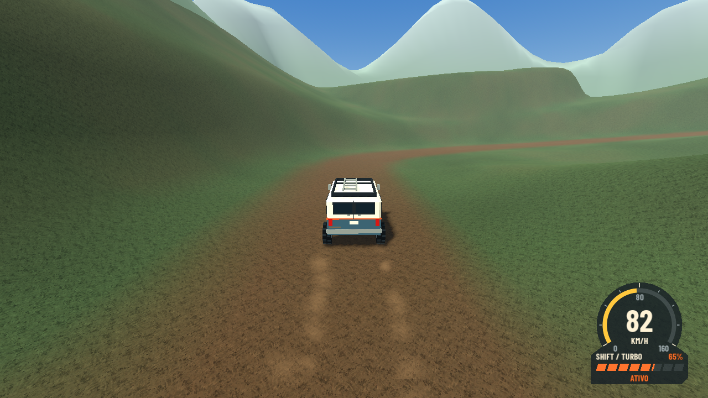
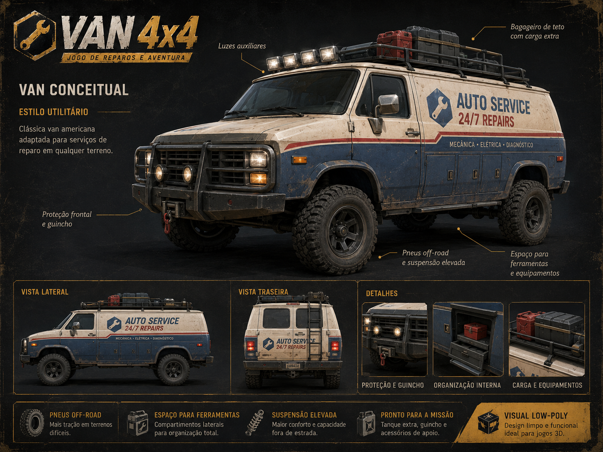
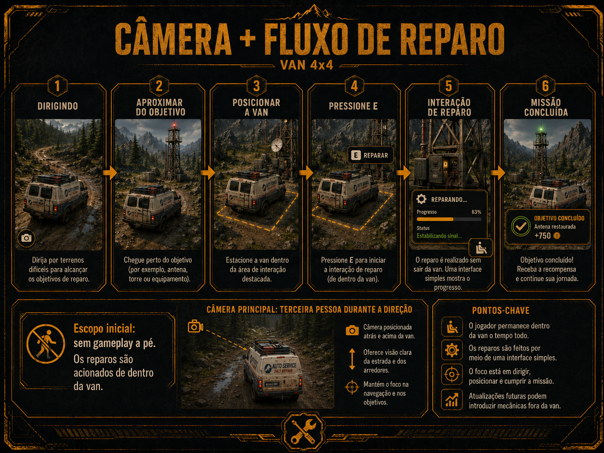
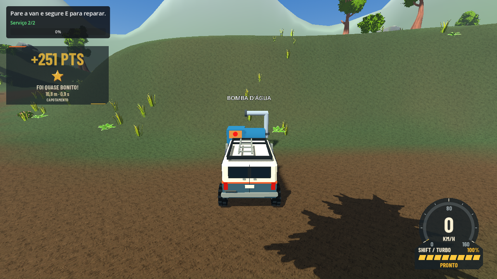
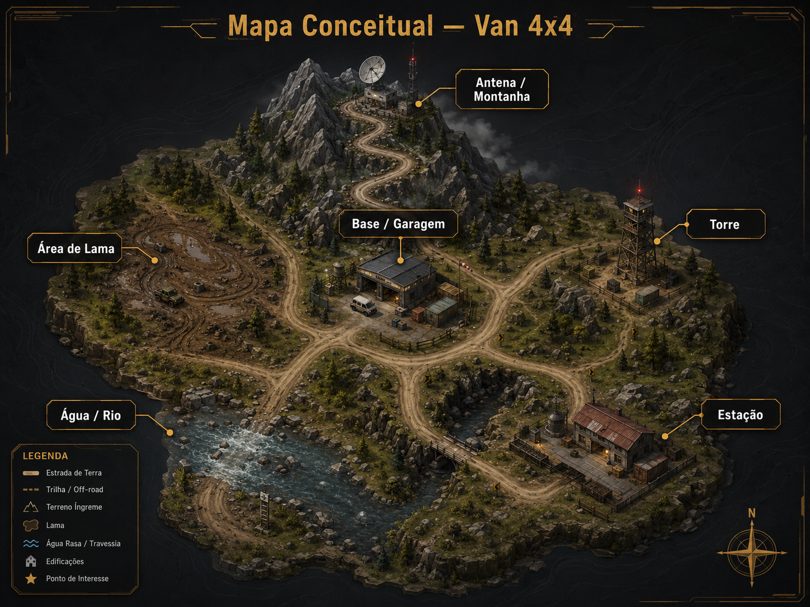
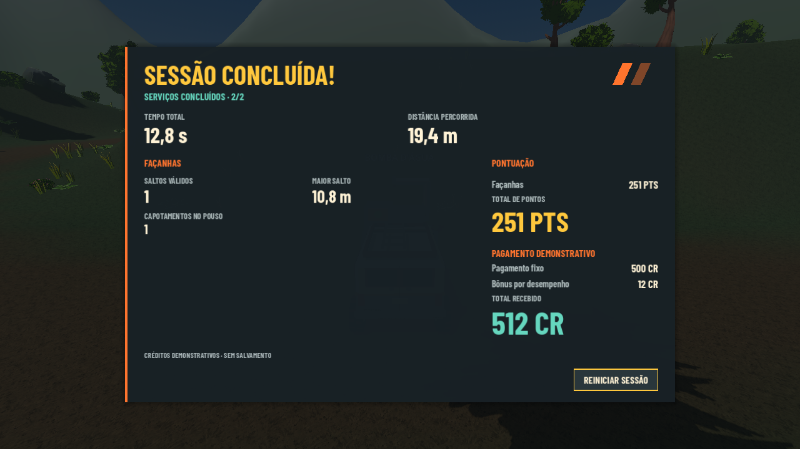

Este GDD descreve a experiência prevista para 09/12/2026. O quadro de andamento reúne o que está implementado, em desenvolvimento e planejado. As imagens distinguem referências conceituais de capturas do protótipo.
Van 4x4 é um jogo 3D de direção off-road com física arcade
e visual low-poly, desenvolvido pela Low Gear Games.
O jogador controla uma van de manutenção praticamente
indestrutível e precisa atravessar terrenos difíceis para
chegar até diferentes pontos do mapa e realizar serviços
de reparo.
O foco principal está na dirigibilidade exagerada, na exploração
dos ambientes e nas situações inesperadas geradas pela física.
A proposta não é simular um veículo de maneira realista, mas
criar uma experiência divertida, responsiva e fácil de aprender.
Não existe uma única maneira correta de dirigir.
Habilidade, criatividade e situações absurdas fazem parte da experiência.
Saltar, usar turbo, derrapar, derrubar árvores e capotar podem ser tão
interessantes quanto chegar ao destino com uma aterrissagem perfeita.
O projeto está em desenvolvimento: os estados abaixo distinguem o
protótipo atual da versão final planejada.
Informações do Jogo
GêneroDireção Off-road / Arcade
PerspectivaTerceira pessoa 3D
ModoSingle-player
Plataformas pretendidasWindows, Linux e macOS
Visual3D Low-poly
PúblicoJogadores casuais e fãs de jogos de direção
Windows, Linux e macOS são plataformas pretendidas; não representam
uma declaração de testes concluídos em todos esses sistemas.
Objetivo do Jogo
O jogador deve utilizar a van para atravessar terrenos
difíceis e chegar até pontos do mapa onde existem equipamentos
que precisam de manutenção.
O principal desafio está no percurso. Lama, pedras, grandes
inclinações, água e obstáculos modificam
a forma como o jogador precisa conduzir a van.
O jogo deve ser rápido de entender e permitir que uma pessoa
comece a dirigir poucos segundos após iniciar a partida.
Primeiro acesso e continuidade
O menu oferecerá Nova partida, Continuar quando existir progresso, Opções e Sair. Uma nova partida leva à garagem com a van básica e o primeiro chamado disponível. A garagem mostra o objetivo, as recompensas previstas, o saldo e as peças equipadas. Iniciar um atendimento abre o mundo, prepara os efeitos e libera a direção após a contagem.
O menu de opções deverá permitir volume e ajustes gráficos simples. O jogador poderá aprender os comandos na interface, escolher o serviço disponível e começar sem uma introdução longa. Continuar recuperará o estado da garagem salvo ao fim de uma transação, sem prometer retomada de um veículo no meio de um salto.
Escopo da Entrega Final
Implementado Presente no protótipo.
Planejado Meta da versão final de dezembro.
Em desenvolvimento Integração parcial ou frente de trabalho em andamento.
O projeto é desenvolvido individualmente. Por esse motivo,
o escopo permanece compacto e concentrado
na qualidade da principal mecânica do jogo: dirigir a van.
Em vez de várias fases ou mapas extensos, a primeira versão
utilizará um único mapa principal com áreas diferentes,
reaproveitado por várias missões.
1 Mapa Principal
Planejado: aproveitar o terreno e a extensão
já existentes em um mesmo mapa, com regiões e rotas variadas.
4 Serviços de Manutenção
Planejado: quatro destinos, reutilizando
a interação básica de reparo e variando o desafio do percurso.
Sem Personagem a Pé
A versão inicial mantém toda a experiência centrada
na van e evita a criação de um segundo sistema
de movimentação.
Estado em 16/11/2026. A GameSession reúne dois serviços sequenciais, estatísticas e relatório animado com pagamento demonstrativo. Menu, garagem, carteira, peças, retorno e salvamento integram o compromisso de 09/12/2026. A entrega documental de 18/11 apresenta a visão completa e seu andamento.
Marcos de Entrega
Primeiro TDD · previsão original
Marco histórico de planejamento. A data efetiva de entrega não está comprovada neste documento.
GDD + TDD + Andamento · previsto
Versão final · prevista
Futuro Fora do Escopo Principal
Clima dinâmico complexo e tempestades com alterações extensas de física.
Guincho funcional, snorkel como melhoria específica e ferramentas individuais complexas.
Sistema detalhado de danos e oficina 3D totalmente explorável.
Grande variedade de minijogos de reparo e múltiplos modelos de van independentes.
Mundo aberto muito maior e campanha longa com dezenas de missões.
Princípios de Design
As decisões do projeto serão guiadas por quatro princípios
principais.
Reconhecer o caos sem punir excessivamente: um pouso desastroso não
deve apagar uma façanha válida. A van permanece praticamente
indestrutível, e o jogador deve poder recuperar o controle e continuar.
Diversão antes do Realismo
A física poderá quebrar expectativas realistas sempre
que isso resultar em uma experiência mais divertida.
Direção como Mecânica Central
O restante do jogo deve apoiar a experiência de dirigir,
explorar terrenos e superar obstáculos.
Escopo Controlado
Poucos sistemas bem executados terão prioridade sobre
grande quantidade de conteúdo.
Performance desde o Início
Otimização é um requisito de design e deve influenciar
arte, mapa, física, efeitos e arquitetura do jogo.
Gameplay
A direção é o núcleo da experiência: seguir a estrada, buscar atalhos,
acelerar, usar turbo, saltar e improvisar diante dos obstáculos.
O percurso deve ser divertido mesmo antes de chegar ao serviço.
Durante o percurso será necessário lidar com terrenos,
obstáculos e condições ambientais que alteram a aderência,
estabilidade e dificuldade de movimentação.
A estrada oferece uma rota mais segura, mas o jogador poderá
tentar atalhos e caminhos off-road mais arriscados.
Ciclo do Protótipo
VAI! e chamado da antena→Dirigir→Superar terreno→Realizar reparo→Reparar a bomba e consultar o relatório
A GameSession começa com preparação gráfica e contagem regressiva. Após VAI!, o jogador dirige até a antena e depois até a bomba. Tempo, distância, façanhas e impactos continuam acumulando entre os serviços. O segundo reparo abre o relatório, que revela os resultados e os créditos demonstrativos. O botão de reinício restaura a sessão inteira.
Ciclo da Versão Final
A garagem conecta os serviços em um mesmo mapa. O fluxo abaixo é a
meta para dezembro, não uma descrição de funcionalidades concluídas.
Ciclo da versão final — da escolha do chamado à próxima configuração da van.
PrepararNa garagem, escolher o chamado, consultar a recompensa e equipar as peças.
ExplorarSair com a van, escolher estrada ou atalho e acumular façanhas entre os obstáculos.
Reparar e voltarConcluir a manutenção e retornar dirigindo ou usar o retorno rápido, preservando os resultados.
Receber e melhorarConsultar o relatório na garagem, receber créditos e comprar ou trocar peças antes do próximo serviço.
A viagem valoriza a escolha de rota. Voltar dirigindo amplia as oportunidades de façanhas, enquanto o retorno rápido preserva os resultados já conquistados.

Captura real de uma etapa anterior da GameSession, em 1280 × 720. Mostra a câmera de direção e o HUD Oficina Arcade. A imagem antecede a integração dos dois serviços.
Turbo e HUD
Na fase com relevo, o turbo consome energia, exige uma espera antes
da recarga e limita a reativação após esgotamento. O HUD mostra
velocidade, reserva e estado do turbo. As cenas antigas preservam
o turbo ilimitado, portanto seu comportamento não representa a
limitação de energia da fase atual.
Façanhas Atuais
O jogo mede distância horizontal e tempo no ar, reconhece giros
completos para frente/trás e rolamentos laterais e distingue pouso
suave, firme, brutal e capotamento após salto. Cada façanha válida
recebe pontos, de uma a três estrelas, estatísticas e uma mensagem
humorística. Pontos e estrelas são acumulados durante a sessão.
Pequenas oscilações, giros horizontais e o reposicionamento não devem
criar recompensas indevidas. A classificação observa a van depois
do impacto, e capotar não zera os pontos da manobra. O jogador pode
ser reconhecido tanto por habilidade quanto por uma chegada absurda.
Estatísticas implementadas e expansão por combos
As estatísticas de sessão já reúnem deslocamento, saltos, giros, pousos, árvores e impactos diretos em caixas, barris e cones. Árvores valem 100 pontos e cada prop único atingido vale 25 pontos na sessão atual. Combos, tempos separados de ida/volta e integração com a economia persistente continuam planejados.
Saltos e Manobras
Quantidade de saltos, tempo no ar, distância horizontal, maior salto, giros, cambalhotas, pousos limpos, pousos brutais e capotamentos.
Destruição
Árvores derrubadas, caixas atingidas, barris e outros obstáculos atingidos e eventos relevantes de colisão. Caixas e barris atuais reagem à física; não possuem destruição implementada.
Combos
Sequências próximas de façanhas e combinações de saltos, giros e impactos, com multiplicadores moderados de pontuação.
Percurso
Tempo de ida, tempo de volta, tempo total, distância percorrida e tipo de retorno utilizado.
Serviço
Missão realizada, reparo concluído e avaliação geral do desempenho, sem obrigar direção perfeita.
Pontos não são dinheiro. Pontos avaliam façanhas e
servirão ao cálculo de bônus; dinheiro será usado na garagem. A
conversão, os multiplicadores e os limites serão balanceados depois.
Regras Planejadas para Recompensar o Caos
Contabilizar cada evento uma vez e evitar bônus artificiais por colisões repetidas.
Não permitir dinheiro infinito por uma árvore ou por seus fragmentos.
Aplicar limites ou redução de bônus quando necessário para evitar exploração infinita de pontos.
Preservar o valor das façanhas mesmo com pousos ruins e capotamentos, valorizando a criatividade.
A Van
A van é o principal elemento do jogo e sua dirigibilidade
deve ser a principal fonte de diversão.
A referência visual é uma van americana clássica de serviços
e manutenção, com carroceria retangular, aparência robusta
e espaço para ferramentas e equipamentos.
A física já é propositalmente exagerada. O veículo pode
enfrentar grandes inclinações, atravessar obstáculos,
realizar saltos, derrapar e capotar sem ser destruído.
Mesmo após situações absurdas, o objetivo será permitir que
o jogador recupere o controle rapidamente e continue a missão.
Identidade e Dirigibilidade
A van americana antiga de manutenção já tem carroceria creme e azul,
faixa utilitária laranja, inscrições “24/7 REPAIRS” e “LG-01”, rack
de teto e pneus com detalhes off-road. O visual usado e robusto é
construído com formas simples e materiais coerentes com o estilo low-poly.
O controlador arcade possui suspensão, direção, assistência de
estabilidade, drift e controle de rolamento no ar. A/D também ajuda
na recuperação de capotamentos; R reposiciona a van. Impactos não
acionam um sistema de vida ou destruição do veículo.

Referência conceitual, não uma captura do jogo. A van low-poly
já foi modelada e utiliza parte desta identidade. Guincho,
compartimentos e outros acessórios ilustrados não representam
funções implementadas nem exigências da versão final.
Física Arcade
Comportamento exagerado e divertido em vez de
simulação automobilística realista.
Van Indestrutível
Capotamentos, saltos e impactos fazem parte da
experiência e não encerram a partida.
Terreno como Desafio
O caminho escolhido pelo jogador é uma parte
importante de cada missão.
Câmera e Interação
A câmera principal é em terceira pessoa e acompanha
a van durante toda a experiência.
A versão inicial não terá personagem controlável fora do
veículo. Essa decisão mantém o escopo concentrado na direção
e evita a necessidade de implementar movimentação a pé,
animações de personagem e uma segunda câmera de gameplay.
Durante a Direção
A câmera fica atrás e acima da van, utilizando
movimentação suavizada e permitindo boa leitura
do terreno à frente.
Ao Chegar no Reparo
O jogador posiciona a van dentro da área de interação,
praticamente parada, e segura E por aproximadamente 2 segundos.
Durante o Reparo
A câmera de direção é mantida. A interface mostra progresso;
soltar E, mover a van acima do limite ou sair da área reinicia
a contagem. O indicador muda de vermelho para verde ao concluir.

Referência conceitual do reparo de dentro da van. Os comandos e valores da prancha são ilustrativos e podem diferir dos usados no jogo. A interação atual exige segurar E e mantém a câmera de direção. O relatório experimental demonstra 500 CR fixos mais floor(pontos totais / 20). O balanceamento da economia final ainda depende de testes.

Captura real da GameSession após a integração dos dois serviços. A instrução de reparo e a barra aparecem ao estacionar junto à bomba. O popup registra uma façanha anterior.
Fluxo da Interação
Aproximar-se→Posicionar a van→Segurar E · 2 s→Interação de reparo→Serviço concluído no protótipo
O reparo dá uma pausa ao percurso. Parar e manter E pressionado confirma a chegada, enquanto o relevo e a escolha de rota continuam sendo o desafio principal.
Controles
Os controles atuais são simples para permitir que novos jogadores
entendam rapidamente como jogar.
W
Acelerar
S
Frear / Ré
A / D
Direção / Rolamento no ar / Recuperação
Espaço
Freio de mão
E
Segurar para reparar
R
Reposicionar a van
Shift + W
Acelerar com turbo quando disponível
Os controles ainda poderão ser modificados durante os testes
de jogabilidade. Suporte a gamepad é uma possibilidade futura;
o mapeamento atual é de teclado e não comprova compatibilidade com controle.
Progressão
Garagem, economia, peças e salvamento fazem parte da meta da versão final. A carteira persistente, as compras e a garagem ainda dependem da implementação planejada. O relatório atual já demonstra pagamento em CR.
Garagem: Ponto Central entre Missões
A garagem será uma interface de preparação entre viagens. Ela permitirá selecionar serviços, consultar
dinheiro e informações básicas da van, visualizar melhorias, comprar
peças, equipar e trocar as peças adquiridas e iniciar novas missões.
Economia: Serviço Garantido, Bônus pelo Estilo
O pagamento fixo por concluir um serviço garante a progressão. Bônus
poderão vir dos pontos de façanhas, de destruições e combinações e de
outros resultados moderados de desempenho. Acrobacias são uma opção
divertida, não uma exigência para avançar.
Preços, pagamentos, conversão de pontos em dinheiro e limites de bônus
ainda serão balanceados. As estrelas atuais são reconhecimento visual
e não uma moeda de compra. Não há valores financeiros finais definidos.
Melhorias: a Mesma Van, Novas Combinações
A progressão modifica a mesma van clássica com peças equipadas, em vez
de oferecer vários veículos independentes. As categorias iniciais
previstas são motor, pneus, suspensão e turbo, com poucas opções
relevantes em cada uma. Peças compradas poderão ser trocadas livremente
na garagem.
Motor
Alternativas de força e aceleração, com compromissos de controle e agilidade a balancear.
Pneus
Alternativas de tração e aderência, alterando a facilidade de contornar terrenos e iniciar derrapagens.
Suspensão
Alternativas de estabilidade, resposta a impactos e potencial para saltos e manobras.
Turbo
Alternativas de intensidade e disponibilidade, com vantagens e limitações perceptíveis.
As combinações abaixo são exemplos de design, não classes obrigatórias nem conjuntos já disponíveis no jogo:
Van Bruta
Mais estabilidade, boa tração e melhor comportamento em impactos; menor agilidade ou aceleração.
Van Veloz
Mais velocidade, aceleração intensa e potencial para saltos longos; menor estabilidade ou controle nas curvas.
Van Saltadora
Suspensão e comportamento aéreo favoráveis a manobras; menor estabilidade em determinadas situações.
O jogador poderá combinar peças livremente. Elas terão vantagens e
desvantagens, não apenas aumentos cumulativos. A van básica deverá
completar todas as missões, e nenhuma configuração deve tornar o jogo
impossível. As diferenças precisam preservar a dirigibilidade arcade.
Resistência Não Significa Vida
A van continua praticamente indestrutível. Uma configuração mais
resistente poderá mudar estabilidade, recuperação ou resposta
às colisões, sem exigir barra de vida ou simulação de danos. Essas
diferenças são propostas para as peças futuras, não mudanças já
aplicadas à física aprovada do protótipo.
Salvamento e Continuidade
A versão final deverá preservar dinheiro disponível, missões
concluídas, peças compradas, peças equipadas e progresso relevante
da campanha. O protótipo ainda não possui essa persistência: os
pontos e estrelas atuais são de sessão. O formato e a recuperação do progresso estão especificados na seção 11 do TDDseção 11 do TDD.
Ordens de serviço e avanço
A campanha é planejada em chamados individuais. A primeira conclusão de cada chamado libera o seguinte, na ordem antena, bomba, gerador e estação. Ao concluir os quatro pela primeira vez, a campanha reconhece a conclusão e mantém os chamados disponíveis para repetição. Cada partida registra seus próprios eventos e liquida uma única recompensa.
A progressão será percebida por serviços concluídos, saldo crescente, novas peças compradas e mudanças no comportamento da mesma van. A van básica continuará capaz de concluir os quatro serviços. Comprar uma peça exige saldo, equipá-la substitui a opção da mesma categoria e trocar peças adquiridas na garagem não cobra novamente. Preços e compensações entre configurações serão calibrados, preservando uma configuração original de referência.
O combo planejado agrupa eventos válidos numa janela curta. Cada evento conserva seus pontos-base e apenas o acréscimo do multiplicador entra como bônus de combo. A elegibilidade dos eventos, a janela, o teto e os multiplicadores serão balanceados. O pagamento fixo deve garantir avanço mesmo sem combos.
Mapa e Ambientes
A versão final aproveitará um mesmo mapa e suas regiões para os
quatro serviços. A variedade vem do relevo, das rotas, dos obstáculos
e das superfícies, sem depender de clima dinâmico complexo.
O projeto
já superou o blockout inicial: há terreno com relevo físico, estrada
sinuosa integrada ao solo, montanhas, extensão extrema, lago e
vegetação low-poly. A estrada orienta o percurso sem impedir a
exploração fora dela.
Árvores selecionadas têm colisão e podem cair e desaparecer após
impactos fortes, com fragmentos visuais. Caixas, cones e barris
reagem à van, inclusive na barricada de caixas; não possuem sistema
de destruição. Lama e água alteram a condução, enquanto poeira,
respingos nas rodas e impacto no lago dão leitura às superfícies.
A GameSession compõe o terreno principal e sua natureza sem herdar a missão antiga e contém antena e bomba. O lago e a extensão estão integrados à mission_level, mas ainda precisam ser incorporados ao mundo da campanha. O playground preserva a sequência antiga de testes.

Referência conceitual inicial, não o layout atual. Base física,
torre e estação ilustradas não estão prontas. O lago existente
substitui a ideia de rio como referência de travessia; as quatro
missões atualizadas são descritas abaixo. A garagem planejada
poderá começar como interface, sem reproduzir este edifício.
Áreas Principais
Base / Garagem
ponto central entre serviços,
inicialmente por uma interface simples de seleção e peças.
Montanha / Antena
mirante com antena, estrada sinuosa, pedras,
grandes inclinações e possibilidade de atalhos
diretamente pelo terreno.
Área de Lama
zonas de baixa aderência,
incluindo a saída de lama na extensão. Trajetória e velocidade importam.
Lago / Travessia
lago com interação física da
van e respingos. A água cria desafios e possibilidades de percurso.
Extensão Extrema
elevações e percursos mais
difíceis ampliam a exploração. Novos equipamentos ainda serão posicionados.
Novos Pontos de Serviço
integrar os quatro serviços, incluindo gerador e estação
meteorológica às áreas existentes, sem exigir novas grandes regiões.
Filosofia do Layout
Rota Segura
Estradas oferecem uma maneira previsível de alcançar
os objetivos.
Atalhos Off-road
O jogador pode abandonar a estrada e tentar caminhos
mais rápidos, difíceis ou absurdos.
Mapa Compacto
Relevo e caminhos sinuosos serão utilizados para criar
sensação de distância sem exigir uma área gigantesca.
O relevo atual já sustenta a experiência de direção. A integração
dos novos serviços deve aproveitar esse trabalho, preservando curvas,
subidas, descidas, saltos e liberdade de exploração.
Organização da versão final
Um mapa finito conectará a base, o mirante, o vale, os bosques, a região do lago e o acesso extremo à estação. A campanha reutiliza estradas e libera exploração fora delas. Regiões adicionais deverão acrescentar escolhas de rota e espaço para os quatro destinos, com geometria preparada antes da partida e densidade moderada de obstáculos.
A referência de 1 km × 1 km orienta o planejamento de escala. A área e o número de setores serão definidos depois de medir o protótipo conectado, mantendo os acessos e contrastes entre as regiões. Água e lama terão leitura visual clara, e subidas, saltos e trechos rochosos oferecerão alternativas ao caminho mais previsível.
Missões e Reparos
A meta da versão final é oferecer quatro serviços no mesmo mapa.
O desafio principal continua sendo alcançar o destino. Os equipamentos
poderão compartilhar uma interação básica de reparo, variando local,
dificuldade do trajeto e apresentação visual, sem quatro minijogos
independentes.
01
Antena de Comunicação
Alcançar a antena no mirante e restaurar o sinal. A GameSession avança desse reparo para a bomba e mantém a sessão em andamento.
A integração à garagem, ao retorno e à progressão faz parte da campanha final.
Desafio principal: subida, curvas e terreno rochoso.
02
Bomba de Água
Alcançar uma estação de bombeamento e restabelecer seu funcionamento.
A bomba é o segundo serviço da GameSession, em uma variante visual própria junto à estrada do vale. Mantém a mecânica de reparo e o indicador independentes da antena. A campanha final ainda deverá conectar esse atendimento à garagem e à progressão.
Desafio atual: deslocamento do mirante ao vale. Acesso pela região de água previsto na campanha.
03
Gerador Remoto
Uma instalação isolada está sem energia. Chegar ao equipamento e religar ou reparar o gerador.
Desafio previsto: terreno irregular e escolha de rota.
04
Estação Meteorológica
Serviço em região mais extrema, com trajetos difíceis, obstáculos e possível travessia de água. Não exige tempestades ou clima dinâmico.
Desafio previsto: percurso extremo e leitura do terreno.
Os quatro serviços deverão aproveitar preferencialmente as áreas
existentes. Nomes e detalhes do gerador e da estação ainda podem ser
refinados. Os destinos compartilham o mesmo mundo e diferem pelo acesso, relevo e equipamento.
Percursos planejados para os quatro chamados
Serviço
Região
Desafio de direção
Terreno
Escolha de percurso
Antena
Mirante na montanha
Conduzir em subida e fazer curvas
Encosta rochosa
Seguir a estrada sinuosa ou cortar pela encosta
Bomba de água
Vale, com acesso pela região de água
Ajustar trajetória e velocidade junto à água
Estrada de terra e área do lago
Seguir a estrada como referência. A conexão final com a água será validada
Gerador remoto
Instalação isolada em área existente, a definir
Escolher uma linha em piso irregular
Relevo irregular
Contrastar uma rota previsível com um atalho off-road. O traçado está em aberto
Estação meteorológica
Extensão extrema
Ler obstáculos e mudanças de inclinação
Relevo extremo, com possível travessia de água
Escolher o acesso pelo relevo. A alternativa segura e a travessia ainda serão validadas
Reparo da Antena
Aproximar a van, estacionar na área e segurar E por aproximadamente
2 segundos. Soltar a tecla, sair da área ou perder a condição de parada
reinicia o progresso. O indicador passa de vermelho para verde, a
interface anuncia “Serviço concluído!” e o reparo não pode ser repetido.
O marcador de objetivo orienta a aproximação.
Na campanha planejada, a van sai da garagem para atender um chamado.
Concluir o reparo libera a escolha de retorno. A missão termina na chegada
válida à garagem ou com a confirmação do retorno rápido. O pagamento é
recebido uma única vez.
Retorno à Garagem
Voltar Dirigindo · Padrão
Retornar com a van, podendo explorar e acumular novas façanhas,
pontos e possíveis bônus de percurso. Registrar separadamente
tempo de ida e tempo de volta. Esta opção não será obrigatória.
Retorno Rápido · Opcional
Ir diretamente à garagem depois do reparo, mantendo pagamento
normal, pontos e bônus já conquistados. Não acumular façanhas
de volta nem aplicar penalidade financeira automática.
O relatório deve identificar o tipo de retorno. Se houver retorno
rápido, não inventar tempo de direção na volta: apresentar essa
condição explicitamente, preservando o tempo total realmente registrado.

Captura real de teste controlado da GameSession, em 1280 × 720. O relatório mostra apenas estatísticas aplicáveis. Os valores ilustram aquela execução, sem representar uma partida completa de campanha ou uma medição de desempenho.
Relatório experimental e conclusão da campanha
O relatório animado já mostra estatísticas relevantes, pontuação e pagamento demonstrativo, omitindo contadores opcionais zerados. Permite pular animações e reiniciar a sessão. Na versão final, será apresentado ao voltar à garagem e liquidará a recompensa uma única vez na carteira. O pagamento aparece por último e não depende de direção perfeita.
Serviço e Viagem
Nome da missão, reparo concluído, tempo de ida, tempo de volta ou indicação de retorno rápido e tempo total.
Façanhas e Caos
Quantidade de saltos, maior salto, giros e cambalhotas, capotamentos, árvores derrubadas, obstáculos atingidos, pontuação e bônus por combos.
Pagamento
Valor fixo do serviço, bônus por façanhas e total de dinheiro recebido. Todos os valores e conversões ainda serão balanceados.
O humor da conclusão deve reconhecer a viagem e seus acidentes. Uma frase como “O cliente não perguntou como você chegou. Melhor assim.” combina com o reconhecimento das façanhas, inclusive quando a van chega toda torta.
Performance e Otimização
Performance é um dos objetivos centrais do projeto e deverá
ser considerada desde as primeiras decisões de desenvolvimento,
e não apenas como otimização realizada no final.
A fidelidade gráfica será propositalmente limitada quando
necessário. A prioridade é oferecer jogabilidade responsiva,
carregamento rápido e altas taxas de quadros por segundo.
O protótipo
utiliza geometria low-poly, materiais simples, grupos de vegetação
com MultiMesh, recursos de terreno preparados previamente e poucos
objetos físicos dinâmicos. As metas e as medições disponíveis são distinguidas no TDDna seção 12 do TDD.
Hardware Modesto
A direção visual e os sistemas deverão ser suficientemente
leves para permitir execução em computadores modestos,
utilizando configurações reduzidas quando necessário.
60 FPS
A experiência deverá buscar manter 60 FPS em máquinas
compatíveis com os requisitos mínimos definidos
durante os testes.
120 / 144+ FPS
Hardware mais potente deverá poder aproveitar monitores
de alta taxa de atualização sem limitação artificial
a 60 FPS.
Diretrizes de Performance
Modelos 3D low-poly
Materiais e shaders simples sempre que possível
Texturas pequenas e reutilizáveis
Quantidade controlada de luzes e sombras dinâmicas
Vegetação e objetos de cenário de baixo custo
Uso limitado de partículas e efeitos gráficos pesados
Mapa compacto em vez de mundo aberto muito extenso
Configurações gráficas ajustáveis como meta planejada, ainda sem menu implementado
Preservar gameplay independente da taxa de quadros como requisito a validar
Metas, não resultados comprovados: 60 FPS em
hardware modesto e taxas maiores em máquinas mais potentes serão
avaliados em testes. Requisitos mínimos, ajustes gráficos e
validação multiplataforma ainda precisam ser consolidados.
Equipe
Luciano Ludwig Heling
Desenvolvimento individual do projeto.
Funções:
Game Design, Programação, Level Design, Arte 3D,
Testes, Documentação e Gerenciamento do Projeto.
Tecnologias
Godot 4.7.2
Engine do protótipo, com renderizador Compatibility.
Cenas, veículo, ambiente e interfaces são construídos
com recursos nativos, priorizando simplicidade e desempenho.
GDScript
Linguagem principal utilizada para implementar
mecânicas e sistemas de gameplay.
Jolt Physics
Motor físico configurado no projeto, utilizado pelos
corpos e colisões do veículo, terreno e objetos.
Git e GitHub
Utilizados para versionamento, documentação,
acompanhamento do desenvolvimento e gerenciamento
das tarefas.
Quaternius
Seleção do Stylized Nature MegaKit [Standard] para
árvores, pedras e plantas. Os modelos usam licença CC0,
registrada junto aos recursos do projeto.
Arte e Materiais Nativos
A van e os equipamentos combinam formas e malhas simples.
O solo utiliza cores de vértice e detalhe de textura, com
materiais padrão da Godot, sem exigir efeitos gráficos complexos.
HTML e CSS
Utilizados para desenvolver este Game Design Document
e mantê-lo versionado junto com o restante do projeto.
Direção visual e sonora
O visual combina volumes low-poly, terreno legível, verdes variados, terra natural e uma van americana antiga de manutenção. A identidade Oficina Arcade usa grafite, marfim, amarelo e laranja, números fortes e Barlow Condensed Bold. Velocímetro, turbo, estrelas e relatório devem celebrar o percurso preservando a visão da estrada.
A fundação de áudio é uma frente paralela informada na branch feat/audio-foundation. Seu conteúdo não está integrado nem foi inspecionado nesta branch. A versão final prevê motor com resposta à condução, turbo, pneus/superfícies, impactos, manutenção, ambiente e confirmação de interface. O som deve ajudar a perceber esforço, velocidade e sucesso dos serviços, com humor e energia sem saturar cada colisão.
Volumes de veículo, ambiente e interface deverão poder ser ajustados. Eventos repetidos terão limites para evitar sobreposição excessiva. A seleção de sons, eventual música, procedência e licenças dependerão da entrega de áudio e de revisão antes da integração.
Andamento e compromisso de entrega
Revisão de 16/11/2026. A entrega de 18/11 apresenta GDD, TDD e demonstração de andamento. A versão final está prevista para 09/12/2026. Os sistemas planejados abaixo continuam dentro desse compromisso.
Estado do projeto em 16/11/2026
Frente
Estado
Experiência e integração
Direção e apresentação
Implementadas
Van, suspensão, turbo, câmera, velocímetro e feedback Oficina Arcade.
Serviços e sessão
Implementados no protótipo
Antena → bomba, estatísticas contínuas, relatório animado e reinício completo.
Terreno-base desacoplado. Lago, lama e extensão aguardam composição na campanha.
Áudio
Em desenvolvimento
Frente paralela em feat/audio-foundation, com integração ainda não verificada.
Garagem e progressão
Planejadas para dezembro
Menu, seleção de chamados, carteira, peças e salvamento.
Gerador e estação
Planejados para dezembro
Dois destinos adicionais para completar os quatro serviços.
Retorno e combos
Planejados para dezembro
Escolha de volta, tempos separados e bônus de sequência com limites a calibrar.
Desempenho e opções
Parcialmente implementados
Warm-up e recursos preparados já existem. Ajustes gráficos e metas de FPS aguardam validação.
Plano até dezembro
16–18/11Fechar a documentação e demonstrar antena → bomba → relatório.
19–22/11Ligar menu, garagem e sessão em um fluxo contínuo.
23–26/11Integrar carteira, salvamento e as quatro categorias de peças.
27–30/11Completar os quatro chamados e a escolha de retorno.
01–03/12Conectar regiões, áudio, opções e combos ao ciclo completo.
04–06/12Revisar física, estatísticas, save e desempenho do conjunto.
07–09/12Testar exportação, corrigir bloqueadores e preparar a apresentação final.
O plano técnicoplano técnico (TDD, 12.8) registra dependências e critérios de aceite. A rastreabilidadeA rastreabilidade (TDD, 12.10) relaciona cada frente à implementação encontrada.
Decisões para aprovação
Ordens e progressão — Definir como a interface reconhecerá a primeira conclusão dos quatro chamados. A ordem de desbloqueio e a repetição dos serviços já estão definidas para a campanha.
Economia e peças — Aprovar a referência 500 + floor(pontos / 20) como ponto de partida, depois definir preços, pagamento por chamado e limites seguros de cada peça.
Mapa — Definir área e setores finais após o protótipo conectado. A referência de 1 km² traz risco de autoria e desempenho para o prazo individual.
Combos — Aprovar janela, teto e forma de bônus antes de integrar. Não usar duplicação de recompensas existentes como multiplicador implícito.
Retorno e salvamento — Validar a condição de chegada à garagem no mundo final e definir a resposta a falhas de gravação.
Áudio e plataformas — Conferir contrato da frente de áudio, sons e licenças. Definir se haverá música e quais plataformas terão exportação validada até 09/12.
A expansão espacial, o balanceamento de peças e combos e a validação multiplataforma concentram risco no prazo disponível. O responsável decide qualquer ajuste de compromisso. O plano mantém essas frentes e prevê validação antes da consolidação final.